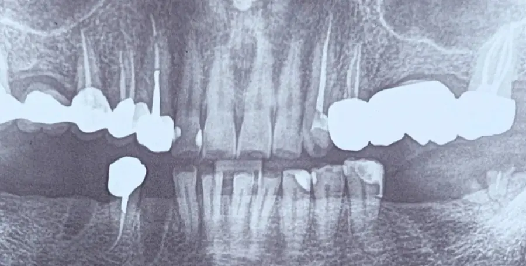

نسخه استخراجشده؛ ترجمه یا تأیید علمی انجام نشده است. وضعیت: captured
بیمار با نامهی ارجاع آمده است. در یادداشت دندانپزشک ارجاعدهنده آمده که بیمار برای فک پایین بهعلت مصرف بیسفسفونات منع ایمپلنت دارد؛ این منع در نامهی پزشک هم ذکر شده. بیمار سابقهی رادیوتراپی ناحیهی سینه هم دارد.

از همان ابتدا ایمپلنت از مسیر درمان فک پایین حذف شد و درمان به سمت پروتز پارسیل رفت.
اینتریم کنار گذاشته شد. منطق اینتریم وقتی برقرار است که یک افق زمانی مشخص وجود داشته باشد؛ یعنی پزشک گفته باشد منع تا تاریخ مشخصی برقرار است و بعد از آن بازبینی میشود. در این بیمار چنین تاریخی تعیین نشده بود.
منعی که سربسته باشد، عملاً مثل یک منع طولانیمدت است؛ ساختن یک «موقت بیپایان» فقط کیفیت را قربانی میکند. پس تصمیم به سمت پارسیل definitive رفت.
قدم اول: تهیهی PA از پایهها. پانورامیک برای قضاوت روی یک پایه کافی نیست؛ اطلاعات اپیکال، مارجین و کیفیت اندو را در این حد نمیدهد.
سپس نوبت روکش دندان ۴ پایین راست بود. تصمیم این بود که روکش عوض شود، حتی اگر رادیوگرافیک ایدهآل به نظر برسد.
پس روکش باز میشود و دیده میشود؛ نه چون مکانیک پارسیل آن را اجبار میکند، بلکه چون در این بیمار هزینهی fail شدن غیرقابل قبول است.
زیر هیچ درمانی نباید مجهول گذاشت؛ و این قاعده هرچه پیامد شکست سنگینتر باشد، سفتتر میشود، نه سستتر. بیسفسفونات این قاعده را نساخت؛ فقط حاشیهی امنی را برداشت که معمولاً برای نادیدهگرفتن یک مجهول وجود دارد.
نوع سؤال: ساخت کلمه · 5 خانه
حروف منبع: ز · ا · م · ی · ن